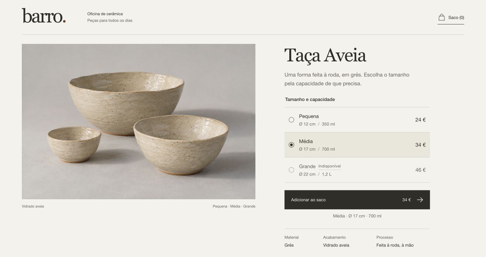
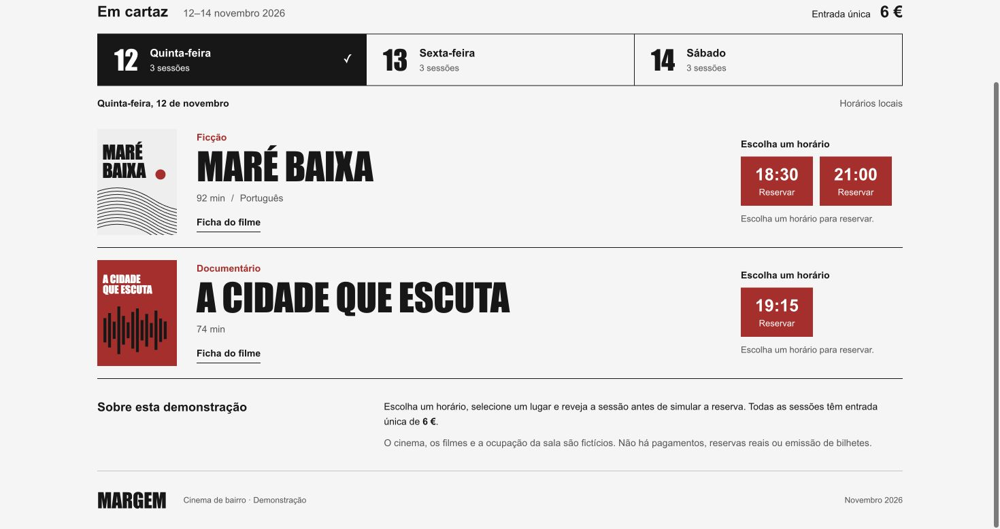
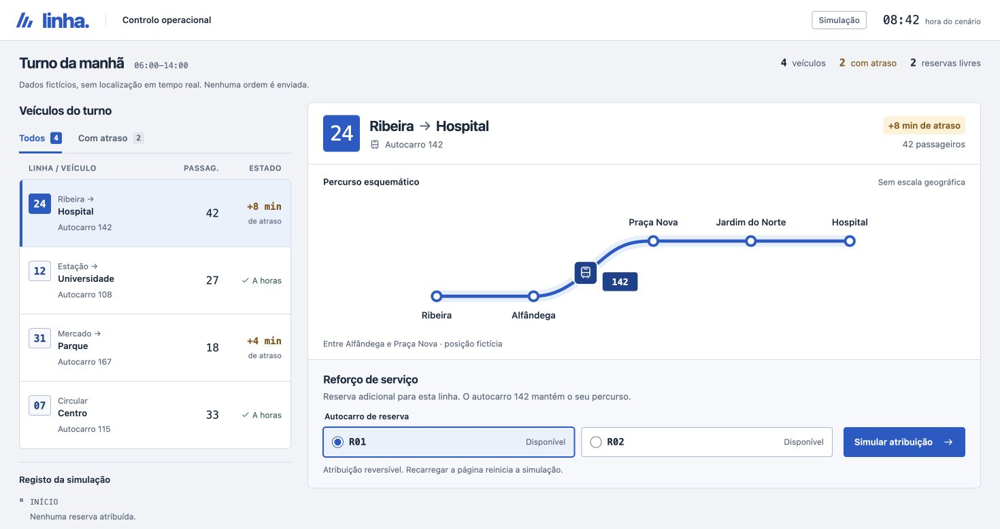

Três projetos.
Três formas de usar.
Uma peça para escolher, uma sessão para reservar e um atraso para resolver. Protótipos funcionais criados com a mesma skill e revistos no navegador.

Barro
Uma família de taças, com escala, capacidade e disponibilidade lado a lado. A fotografia apresenta a peça; o formulário ajuda a escolher.
Experimente trocar o tamanho, consultar a opção esgotada e editar o saco.
Experimentar Barro
Margem
O programa é a entrada. Dias, filmes e horários levam à seleção de um lugar, mantendo a identidade de um cinema de bairro.
Mude o dia, escolha uma sessão e simule a reserva de um lugar.
Experimentar Margem
Linha
Rotas e atrasos organizam o trabalho. A representação do percurso serve à inspeção do veículo e à atribuição de uma reserva.
Filtre atrasos, selecione uma linha, atribua uma reserva e desfaça a ação.
Experimentar LinhaO que esta comparação demonstra
Os três projetos partem de briefs sintéticos e foram construídos separadamente. A revisão considera composição, hierarquia, conteúdo, comportamento e adaptação ao telemóvel. O relatório no repositório documenta as correções e os testes realizados.
As compras, reservas e operações são demonstrações locais. Não existe pagamento, bilhete real ou controlo de transportes. A fotografia de cerâmica foi gerada para este exercício.